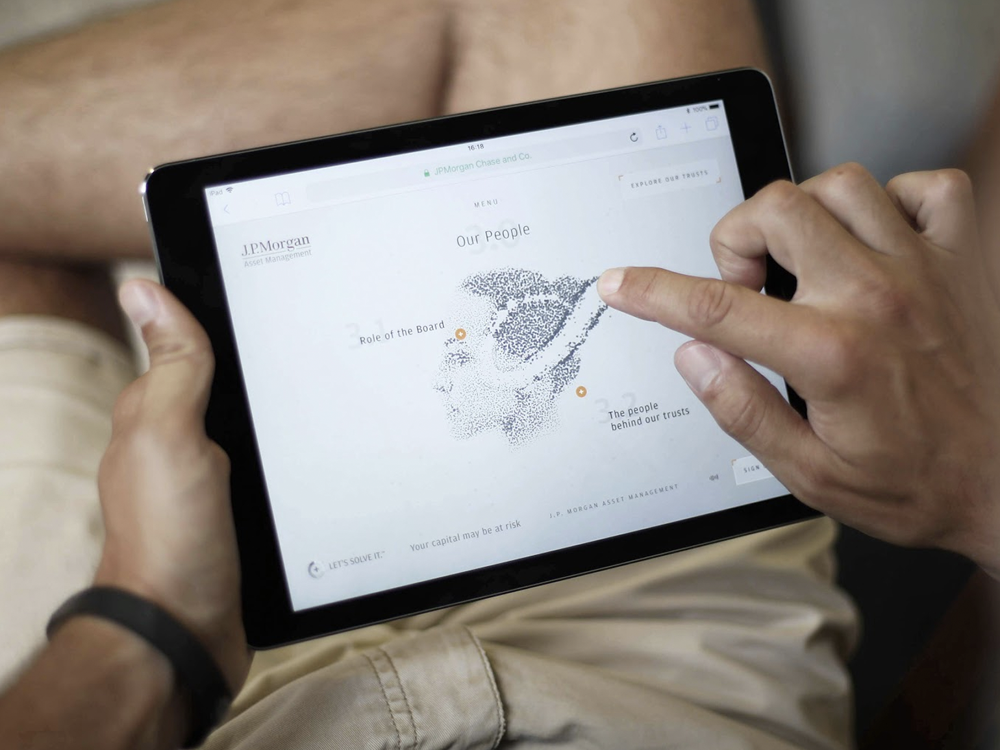
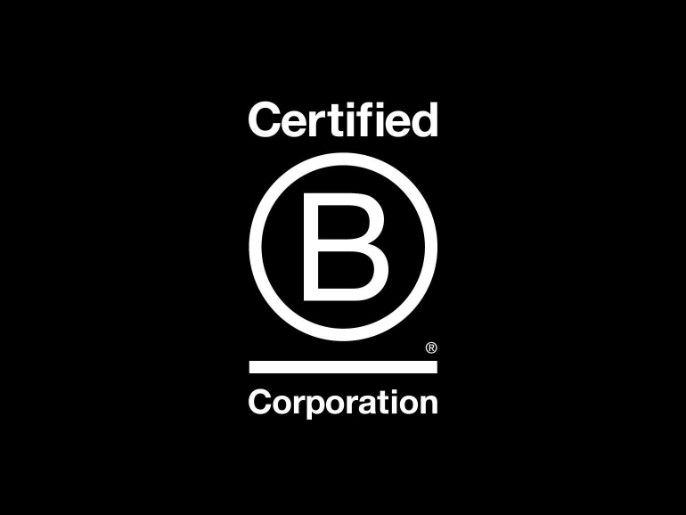

If you build it, they will come
How to overcome the competition for customer loyalty.
The competition for customer loyalty has never been greater and focusing on the overall customer experience, particularly user engagement, is the route to customer loyalty and competitive advantage.
Strategy
You will need to start by researching your customer needs and defining your organisational goals. Ask yourself “What impact do you want to make?”. This should be twofold: an impact on the business as well as the end-user. This will be your anchor when developing your digital campaign. Be mindful of the user at all stages of the process. This foundation phase is fundamental to success, whether it’s technical limitations in the business or knowing your target audience on a deeper level, it sets the path for creating a solution that works.
Design
Consider innovations and engaging digital experiences that connect people at every touchpoint. Bring your brand experiences and the topic to life.
Our work with J.P.Morgan encapsulates this. Despite having been around for well over a century, Investment Trusts remain something of an unknown quantity among investors. The topic is complex and difficult to grasp quickly. A digital solution that can guide and direct users brings the opportunity to swiftly reach and onboard a wider audience than ever before.
Our solution, A Story About Trusts, engages, educates and, crucially, encourages users to explore how J.P. Morgan’s expertise and product offering in Investment Trusts could benefit their portfolio.
With creative freedom to explore the brief, we looked to the diversified, global nature of J.P. Morgan’s investment business for design inspiration. The result was the ‘particle’ concept, based on fluid fragments that dynamically react to user input, forming shapes as they swarm together. It was bold and distinctive but also alive with interactivity, which was vital as the site would be displayed on touchscreens at customer-facing events with the aim of sparking new conversations with investors.
These particles are used as a connecting motif, guiding users to priority sections of high-value content allowing the experience to unfold in manageable sections culminating in a quiz to uncover the objectives of the users.

“The final experience barely changed from the first concept pitched, which to us as a client, showcased the collaboration between agency and client to understand the heart of the business problem and produce a solution that answered every part of the brief whilst pushing the boundaries digitally.”
Jordan Chinchen - Senior Marketing Manager, J.P. Morgan Asset Management
Taking advantage of market trends such as the increased use of Augmented and Virtual Reality incorporate more engaging functionality in your campaigns. Companies are exploring and exploiting technology in their competition to engage busy audiences and communicate information in new, interesting ways. Technologies such as these can seem intimidating or out of reach, but Yoyo concepting, testing and launching AR experiences for J.P.Morgan within a matter of weeks in time for a key event.
Typically, AR requires the development of a bespoke app, which can present a significant development cost and also introduce a barrier to the user experience. However, by using A-Frame, an open-source web framework for creating augmented reality experiences, we were able to contain activity within the native camera app and web browser common to all modern mobile devices. All that was needed was a single, printed card for users to scan with their phone, avoiding the need to produce additional physical collateral.
In this case, AR helped the message resonate and ensured their outreach reflected how they wanted to be perceived. It emphasised and actively demonstrated how our client was closely aligned with the sector’s digitally-driven future and armed them with ‘wow’ moments to kickstart conversations with their audience.
Tech
Consider which technological solutions will enhance your organisation’s digital performance and how the website will integrate with other digital functionality to create a seamless experience. Too many brands invest in multiple platforms and fail to invest the time in making them talk to each other having the tools isn’t enough, making them sing harmoniously together is what will make your customers feel loved and loyal.

Planet
In line with trends to reduce carbon footprints, you can take a look at how your website is impacting the planet using this website:
websitecarbon.com
If your organisation is positioned as one that places sustainability high on the agenda, then this will be a useful point of difference to draw out.
What’s the secret?
The icing on the cake is commitment. A commitment to impress the customer with an experience that will be so memorable and engaging that they will want to return to your site again and again.
If you are successful in creating a digital experience with impact, that resonates with your audience, this will translate to the bottom line.
“Brands and retailers will see a 3x higher lifetime value with consumers if there is an emotional connection.”
Gregg Lawrence - CCO Yoyo